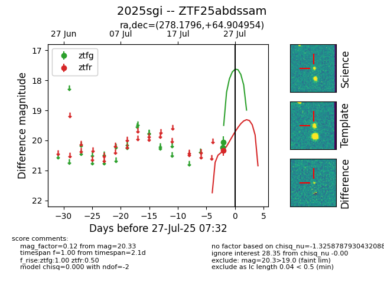

Target 2025sgi at 2025-07-27 07:32, see:
FINK: fink-portal.org/2025sgi
Lasair: lasair-ztf.lsst.ac.uk/objects/2025sgi
ALeRCE: alerce.online/object/2025sgi
TNS: wis-tns.org/object/2025sgi
YSE: ziggy.ucolick.org/yse/transient_detail/2025sgi
alt names
ZTF25abdssam (ztf,fink)
2025sgi (tns,yse)
coordinates:
equatorial (ra, dec) = (278.1796,+64.90495)
galactic (l, b) = (94.7879,+26.34262)
photometry
last ztfg=20.06, ztfr=20.33
2 ztfg, 1 ztfr detections
